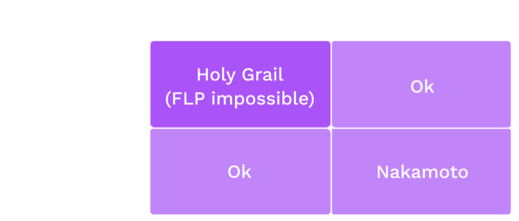

<!DOCTYPE html>
<html lang="en">
  <head>
    <meta charset="utf-8" />
    <meta name="viewport" content="width=device-width, initial-scale=1.0, maximum-scale=1.0, user-scalable=no" />

    <title>Consensus Systems</title>
    <link rel="shortcut icon" href="./../../../favicon.ico" />
    <link rel="stylesheet" href="./../../../dist/reset.css" />
    <link rel="stylesheet" href="./../../../dist/reveal.css" />
    <link rel="stylesheet" href="./../../../assets/styles/polkadot-theme.css" id="theme" />
    <link rel="stylesheet" href="./../../../css/highlight/shades-of-purple.css" />

    <link rel="stylesheet" href="./../../.././assets/styles/custom-classes.css" />
    <link rel="stylesheet" href="./../../.././assets/styles/polkadot-theme-base.css" />
    <link rel="stylesheet" href="./../../.././assets/styles/PBA-theme.css" />
    <link rel="stylesheet" href="./../../.././plugin/design-system/index.css" />

  </head>
  <body class="site">
    <header class="site-header">
      <a href="">
        
      </a>
      
    </header>
    <main class="site-reveal reveal">
      <article class="slides">
        <section  data-markdown><script type="text/template">

# Consensus Systems
</script></section><section  data-markdown><script type="text/template">
## Speaker

<widget-speaker name="Joshy Orndorff" position="Blockchain Chef" image="/assets/img/0-Shared/people/joshy.png" github="https://github.com/JoshOrndorff" twitter="joshyorndorff" matrix="joshyorndorff:matrix.org"></widget-speaker>
</script></section><section  data-markdown><script type="text/template">
## Consensus is

A decision making process that strives to achieve acceptance of a decision by all participants.

<aside class="notes"><p>If we have external factors like trust relationships or Social hierarchy it can be quite easy.</p>
<p>Trust example: If everyone trusts each other, then any one person can propose an outcome, and all the others will trust that it is in the community&#39;s best interest.</p>
<p>Social Hierarchy example: If a community has an executive (President, King, CEO), the executive can propose her preference and everyone will accept it based on the external mechanism that keeps her as the executive.</p>
<p>But these conditions are not interesting, and are often not realistic. It gets interesting when we don&#39;t make these simplifying assumption.</p>
</aside></script></section><section  data-markdown><script type="text/template">
## Adversarial Conditions

- The participants want to agree on _something_
- They don't trust each other
- Some could be faulty, or make mistakes
- Some could be straight up malicious
</script></section><section ><section data-markdown><script type="text/template">
## Desired Properties

All honest participants...

- Termination - Eventually reach some decision
- Agreement - Reach the same decision
- Integrity - Reach at most one decision, which was proposed by at least one participant.
</script></section><section data-markdown><script type="text/template">
## Also Validity

If all participants unanimously propose the same decision , all honest participants reach that decision.

<aside class="notes"><p>Another desireable property that is sometimes too obvious to say.</p>
</aside></script></section></section><section ><section data-markdown><script type="text/template">
## Example 1: Where to go for dinner

<widget-columns>
<widget-column>


</widget-column>

<widget-column>

- Termination - Stan, Kyle, and Kenny will each eventually decide where to eat.
- Agreement - Stan, Kyle, and Kenny will each decide to eat at the same place.
- Integrity - Stan, Kyle, and Kenny will eat at either Whistlin' Willies or Casa Bonita.

</widget-column>
</widget-columns>

<aside class="notes"><p>Stan, Kyle, Kenny, and Cartman are trying to decide where to have dinner.
Stan, Kyle, and Kenny want to have something yummy and spend time together.
Cartman is secretly pursuing his own goals and doesn&#39;t care whether dinner is yummy.
In fact he secretly hopes they won&#39;t decide at all so he can go home and eat KFC with his mom.</p>
<p>Stan and Kyle both propose Whistlin&#39; Willie&#39;s for dinner.
Kenny and Cartman propose Casa Bonita.</p>
<p>In the end Kenny may not agree that Whistlin&#39; Willie&#39;s is the best option for dinner, but he will agree that it is the legitimate group decision.</p>
<p>Image source: <a href="https://southparkstudios.mtvnimages.com/images/shows/south-park/clip-thumbnails/season-14/1402/south-park-s14e02c03-ill-show-them-f-obscene-16x9.jpg">https://southparkstudios.mtvnimages.com/images/shows/south-park/clip-thumbnails/season-14/1402/south-park-s14e02c03-ill-show-them-f-obscene-16x9.jpg</a></p>
</aside></script></section><section data-markdown><script type="text/template">
## Example 2: Which side of the road to drive on

In the last module we discussed the coordination game and its two Nash equilibria. We discussed that if there is no communication allowed among participants, a Shelling point may help.

Luckily in real life, communication is possible so we can run a consensus algorithm instead of rely on a Shelling point.

- Termination -
- Agreement -
- Integrity -

<aside class="notes"><p>Imagine all the drivers are allowed to participate in the consensus. Most are honest because they don&#39;t want to crash, but
some may be Byzantine.
Someone please volunteer to describe what one of these means in this example.</p>
<ul>
<li>Termination - All honest drivers will eventually decide which lane to drive in</li>
<li>Agreement - All honest drivers will agree on the same lane to drive in</li>
<li>Integrity - The decision will be one of the participants suggestions. Doesn&#39;t mean much in this case because there are only two choices. It&#39;s basically guaranteed that they will both be suggested by at least <em>someone</em></li>
</ul>
</aside></script></section></section><section ><section data-markdown><script type="text/template">
## Byzantine Generals Problem

<widget-columns>
<widget-column>


</widget-column>

<widget-column>

- Divisions plan to attack
- Must make coordinated attack to succeed
- Some generals might be traitors and behave maliciously

</widget-column>
</widget-columns>

<aside class="notes"><p>Several divisions of the Byzantine army are camped around an enemy city. They plan to attack the city, but have not yet decided when to attack.
If the attack is coordinated, they will probably be successful, but if it is uncoordinated, they will probably be defeated.
What do our three properties mean in this scenario?</p>
<ul>
<li>Termination -</li>
<li>Agreement -</li>
<li>Integrity -</li>
</ul>
</aside></script></section><section data-markdown><script type="text/template">
## Mistakes vs Malice

**Crash Tolerance** - A system can keep operating normally when some actors crash or go offline.

**Byzantine Fault Tolerance** - A system can keep operating normally when some actors are intentionally malicious. Byzantine actors may:

- Crash - Or pretend to have crashed - Byzantine faults are a superset of crash faults
- Lie - Sending false information to peers
- Equivocate - Send inconsistent information to different peers

<aside class="notes"><p>These examples and many others are <em>instances</em> of the Byzantine Generals Problem</p>
</aside></script></section><section data-markdown><script type="text/template">
## Mistake or Malice?

<widget-columns>
<widget-column>


</widget-column>

<widget-column>

- Consider an Airplane flight computer.
- The pilot _must_ know the airspeed at all times.
- Airspeed sensors can fail.
- Sensors can be buggy.
- Are these malicious?

</widget-column>
</widget-columns>

<aside class="notes"><p>Consider an Airplane flight computer. It is critical that the pilot (human or automated) knows the aircraft&#39;s airspeed at all times.
Airspeed sensors can fail due to extreme temperatures, icing, solar radiation, and other reasons.
For this reason, there are redundant sensors, and they run a consensus protocol.</p>
<p>Imagine that one of the sensors has an overflow <em>bug</em> such that when the airspeed exceeds a certain threshold, maybe <code>u8::max_value()</code>, it actually reports a much lower speed.</p>
<p>Are these crash faults or byzantine?</p>
<p>In a blockchain system, bugs in the code may cause nodes whose operators are intending to be honest, to deviate from the protocol anyway. This is why client diversity is important.</p>
</aside></script></section></section><section ><section data-markdown><script type="text/template">
## Synchrony

A system is one of:

- **Synchronous** - When a message is sent, it is received immediately by all recipients.
- **Asynchronous** - When a message is sent it may be received after some delay, or not at all. The sender doe not know whether it is received. Messages may be received in different orders by different parties.
- **Partially Synchronous** - When a message is sent, it may be received after some delay up to a maximum delay, $T$. It may not be dropped entirely. Messages may be received in different orders by different parties.

Roughly analogous to real-time (async) vs. turn-based (sync) games.
</script></section><section data-markdown><script type="text/template">
## Sync or Async?

<widget-text center>

Classify each of these:

- Telephone call
- Email
- Text message
- Jitsi video call
- Element chat

<aside class="notes"><p>Answers</p>
<ul>
<li>Telephone call - sync</li>
<li>Email - async</li>
<li>Text message - sync</li>
<li>Jitsi video call - sync</li>
<li>Element chat - IDK actually</li>
</ul>
</aside></script></section></section><section  data-markdown><script type="text/template">
## Determinism

A system is one of:

- **Deterministic** - The same inputs give the same outputs every single time.
- **Probabilistic** - The same inputs may not give the same outputs. Requires a source of entropy. eg coin flipping.
</script></section><section  data-markdown><script type="text/template">
## FLP Impossibility



<aside class="notes"><p>Once it was shown that deterministic consensus is impossible in an async network, the field split into two major parts. Either you:</p>
<ul>
<li>Assume the network is (at least partially) synchronous</li>
<li>Introduce non-determinism</li>
</ul>
<p>One interesting thing about Nakamoto pow consensus is that it does <em>both</em>.</p>
<ul>
<li>Nondeterminism because you don&#39;t know who will solve the pow first</li>
<li>Partial synchrony because it only works if the time to download and execute the block is much less than the time to solve the PoW</li>
</ul>
</aside></script></section><section  data-markdown><script type="text/template">
## Blockchain Consensus

So what are we even trying to decide? A few things:

<widget-text center>

- **Author selection** - Who gets to author the next block
- **Finality** - Which blocks are final

<aside class="notes"><p>Finality is basically like safety. Finality can be proved to entities that are not involved in consensus.</p>
<p>These two decisions can be entirely orthogonal to one another, or wrapped up together. I&#39;ll focus on finality first</p>
</aside></script></section><section ><section data-markdown><script type="text/template">
## Long-running Systems

Blockchains are intended to keep processing and finalizing transactions forever. This is more like deciding where to go to dinner every night over and over.

<widget-text center>

We frame the desireable properties differently. At a very high level they are:

- **Liveness** - Something good will eventually happen
- **Safety** - Nothing bad will happen
</script></section><section data-markdown><script type="text/template">
## Example: Finalizing blocks

<widget-text center>

- Liveness - Another block will eventually be finalized.
- Safety - No two conflicting blocks will ever be finalized by honest participants.

<aside class="notes"><p>Liveness here obviously depends on liveness in the authoring. No more blocks will be finalized if no more blocks are authored.</p>
</aside></script></section><section data-markdown><script type="text/template">
## Liveness vs Termination

Earlier I described Termination as desireable, now I'm saying Liveness is desireable.

Are these at odds with each other?

<aside class="notes"><p>Termination guarantees that, for a given decision, each honest participant will eventually decide something. This concept is relevant when there is a single decision to be made. In the blockchain context, it guarantees that we will eventually know which block is final at height n.</p>
<p>Liveness guarantees that a system that is intended to continue making progress, will indeed eventually make progress. In the context of the blockchain, liveness means that once we&#39;ve decided what block is final at height n, we will eventually go on to decide what block is final at height n + 1.</p>
</aside></script></section></section><section  data-markdown><script type="text/template">
## Choosing Authorities

We saw that some consensus engines have high communication overhead, $O(n^2)$. Other systems have lower overhead, but there is always _some_ practical bound on the size of the authority set when deterministic finality is used.

Therefore we need a fair way to choose who gets to participate. Typically there is an onchain economic game to select the participants.
</script></section><section ><section data-markdown><script type="text/template">
## Keeping Authorities Honest

All the blockchain consensus engines we looked at assume some threshold of honest participants. So how do we ensure they are honest? We use an on-chain economic game to do so.

<widget-text center>

- Why would anyone even want to participate?
- How do we define misbehavior?
</script></section><section data-markdown><script type="text/template">
## Game Theory!

Abstractly: You participate when the utility of doing so exceeds the cost.

<widget-text center>

Incentive designers may potentially:

- Reward honest behavior
- Punish (aka slash) dishonest behavior

<aside class="notes"><p>Many systems use both of these, but doing so is not strictly necessary. Even without slashes, the opportunity cost of staking and the missed rewards from authoring invalid blocks may be sufficient.</p>
<p>Algorand tried to get away without block rewards either, but ran into a problem. Any guess? -- Nobody wanted to participate.</p>
</aside></script></section><section data-markdown><script type="text/template">
### Potential Rewards

<widget-text center>

- Explicit: Block reward paid by inflation
- Explicit: Transaction fees
- Implicit: Your dApp stays live and you get utility from the dApp
- Implicit: Street cred 😎
</script></section><section data-markdown><script type="text/template">
## Potential Punishment

PoW has inherent punishment through wasted energy. Other system's don't.

Instead, aspiring participants will typically lock up a security deposit which can be slashed in part or in whole.
</script></section><section data-markdown><script type="text/template">
## What is potentially punishable?

<widget-text center>

- Authoring when you aren't supposed to
- Failing to author when you are supposed to
- Casting finality votes for conflicting candidate blocks
- Casting a finality vote for a block (or chain) that includes an invalid state transition.

_How severe are each of these offences? Do they all warrant a slash? A full slash?_
</script></section><section data-markdown><script type="text/template">
### Concrete Punishment Example

Let's say a slash is 100 units, and the reporter gets 10%. I plan to attack the network. If my attack is successful, I expect to gain roughly 200 units worth of utility.

I ask another authority to cooperate with me: "I'll pay you 20 units to _not_ rat me out for my attack".

Question: How would you respond?

<aside class="notes"><p>&quot;I don&#39;t believe you can carry out the attack because <em>someone else</em> will report you and take the 10 units, leaving me with 0.&quot;</p>
</aside></script></section></section><section ><section data-markdown><script type="text/template">
## Case Study: Nakamoto Consensus

- Aka Proof of Work
- Anyone can participate anonymously
- Can start and stop participating at will without notice
- Support is signaled by "mining" (performing a hash preimage search) on blocks

<aside class="notes"><p>In Nakamoto consensus, the mining contributes to finality as well as selects the next author. At this point the author selection is orthogonal. We&#39;re focusing on safety and finality here.</p>
</aside></script></section><section data-markdown><script type="text/template">
### Finality in Nakamoto Consensus

- Longest chain rule\* - Longest chain is "best"... for now
- Someone could always start mining a chain and, with low but non-zero probability, end up with it longer.
- There could _already_ be a longer chain that you just haven't heard of.

The finality is only probabilistic. Nakamoto consensus in only safe in a synchronous network.

<aside class="notes"><p>This is to say that Nakamoto consensus is NOT safe in on the real asynchronous internet. In practice, as long as
blocks can be downloaded and executed much more quickly that the target block time, it is usually good enough.</p>
<ul>
<li>Longest could also mean most accumulated work</li>
</ul>
</aside></script></section><section data-markdown><script type="text/template">
## Punishment and Reward in Nakamoto Consensus

- Implicit punishment: Mining a block costs energy. If that block is not in the best chain you wasted the energy.
- No reward in the consensus layer
- (Usually) an explicit reward in the economic game: Block authors are paid with inflation and transaction fees.
</script></section></section><section ><section data-markdown><script type="text/template">
## Case Study: Tendermint

- Assume partial synchrony - time is divided into slots
- One block is up for Byzantine agreement in each slot.
- If the block has enough votes by the end of the round, it is finalized. Otherwise, it is rejected via timeout.

<aside class="notes"><p>Tendermint assumes partially (aka weakly) synchronous network - That is to say that messages may not arrive immediately, but will arrive within a finite time bound.
Practically speaking, time is divided into &quot;slots&quot; of equal length, and (at most) one round of Byzantine agreement happens in each slot.</p>
</aside></script></section><section data-markdown><script type="text/template">
## Finality in Tendermint

- Deterministic finality - Once a block is finalized, we know it is finalized\*.
- Next round doesn't start until the previous one ends.
- Forkless - Forks are disallowed because blocks can only be authored on finalized parents.

<aside class="notes"><p>Because it is based on Byzantine agreement, we know that a finalized block will never be revierted <em>as long as our assumptions about honest participant threshold are met</em>. As we discussed, game theory can help ensure the honesty assumptions are met.</p>
<p>Tendermint is often touted as &quot;instant finality&quot;. It is instant in the sense that finality is tied to authorship. In practice this means that authorship, which is inherently O(n), is throttled down to stay in sync with finality which is O(n^2).</p>
</aside></script></section><section data-markdown><script type="text/template">
## Punishment and Reward in Tendermint

Tendermint is based on PBFT - There are no incentives in the consensus layer.

<widget-text center>

In the economic game:

- (Usually) an explicit reward just like in PoW - inflation, fees
- Requires a security deposit which incurs opportunity cost, and may be slashable
</script></section><section data-markdown><script type="text/template">
### Hybrid Consensus

Separating the block production from finality.

This allows the block production to stay live and regular even if finality is lagging. It also allows lower overhead in the finality layer.

This approach is used in Substrate.
</script></section></section><section ><section data-markdown><script type="text/template">
## Case Study: Grandpa

<widget-text center>

- Deterministic finality _only_
- Requires an external block authoring scheme with its own liveness proof.
- Two rounds of voting - the details of the voting will be discussed next week
</script></section><section data-markdown><script type="text/template">
## Vote on Chains, not Blocks

Finalizing a block in a BFT system with $n$ participants is in $O(n^2)$, In Tendermint this communication has to happen at each and every block which puts a bound on the size of the validator set.

<widget-text center>

Now that finality is separated, we treat each vote as a vote not only for one block, but also for each ancestor block. This significantly reduces the number of total messages sent.

- Allows the chain to stay live even when many validators are offline
- Allows for a challenge period to delay finality if needed
</script></section></section><section  data-markdown><script type="text/template">
## Authoring Schemes(Finite Participant)

Regardless of whether finality is separated from block authoring or not, we need a way to decide who can author the next block.

First, a question: Why not just let anyone author a block any time they want?

<aside class="notes"><p>Answer: Because it would overwhelm the network. It takes time to download and execute blocks. Restricting which nodes can author and when they can author, throttles block production to a manageable rate.</p>
</aside></script></section><section  data-markdown><script type="text/template">
## Case Study: Aura

The simplest possible idea: The participants are given a total ordering, and then they take turns, one-author-per-slot in order forever.
</script></section><section  data-markdown><script type="text/template">
## Case Study: Babe / Ouroborous

The two are quite similar. Participants reveal a VRF output once per slot. If your output is below a pre-determined threshold, you are eligible to author in this slot.

Question: Why is this better than Aura?

<aside class="notes"><p>Answer: Because in Aura you know who the next leader will be well in advance. This allows an adversary to perform a targeted attack. By using randomness in this way, you don&#39;t know who will eligible until the slot is upon us. This is similar to PoW.</p>
</aside></script></section><section  data-markdown><script type="text/template">
## Summary

<widget-text center>

- Networks can be {Synchronous, Asynchronous}
- Consensus systems can be {Deterministic, Probabilistic}
- Consensus systems can be {Open participation, Finite participation}
- There is always an assumption that at least {1/2, 2/3} participants are honest
- In decentralized systems, we use Economics and Game Theory to incentivize honest execution of the consensus protocol
</script></section>
      </article>
    </main>

    <script src="./../../../dist/reveal.js"></script>
    <script src="./../../../plugin/markdown/markdown.js"></script>
    <script src="./../../../plugin/highlight/highlight.js"></script>
    <script src="./../../../plugin/zoom/zoom.js"></script>
    <script src="./../../../plugin/notes/notes.js"></script>
    <script src="./../../../plugin/math/math.js"></script>

    <script type="module">
      import DesignSystem from "./../../../plugin/design-system/design-system.js"

      function extend() {
        var target = {};
        for (var i = 0; i < arguments.length; i++) {
          var source = arguments[i];
          for (var key in source) {
            if (source.hasOwnProperty(key)) {
              target[key] = source[key];
            }
          }
        }
        return target;
      }

      // default options to init reveal.js
      var defaultOptions = {
        controls: true,
        progress: true,
        history: true,
        center: true,
        transition: 'default', // none/fade/slide/convex/concave/zoom
        plugins: [
          RevealMarkdown,
          RevealHighlight,
          RevealZoom,
          RevealNotes,
          RevealMath,
          DesignSystem
        ]
      };

      // options from URL query string
      const queryOptions = Reveal().getQueryHash() || {};

      const options = extend(defaultOptions, {"width":1400,"height":900,"margin":0,"minScale":0.2,"maxScale":2,"transition":"none","controls":true,"progress":true,"center":true,"slideNumber":true,"backgroundTransition":"fade"}, queryOptions);
      options.baseUrl = '';
      Reveal.initialize(options);
    </script>
  </body>
</html>
